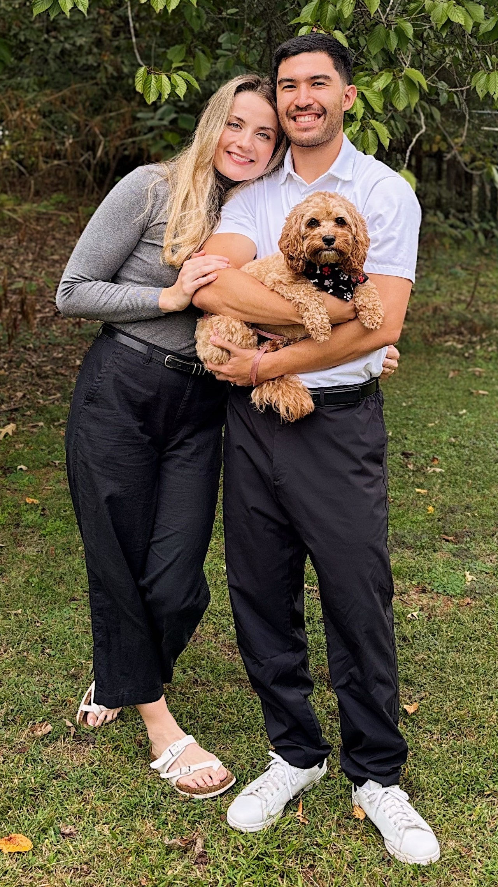
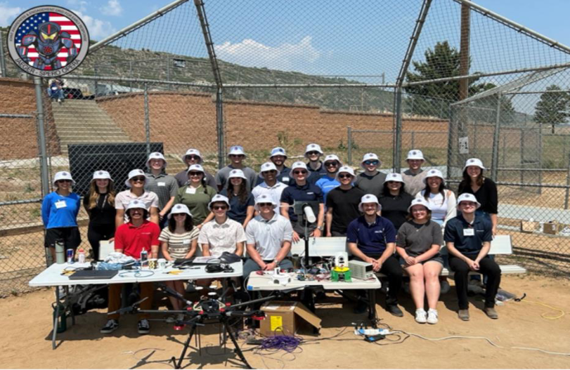
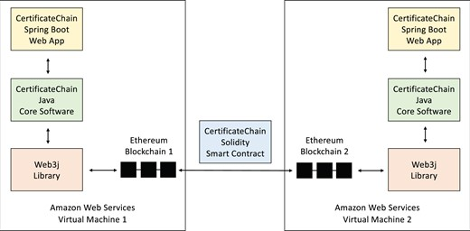
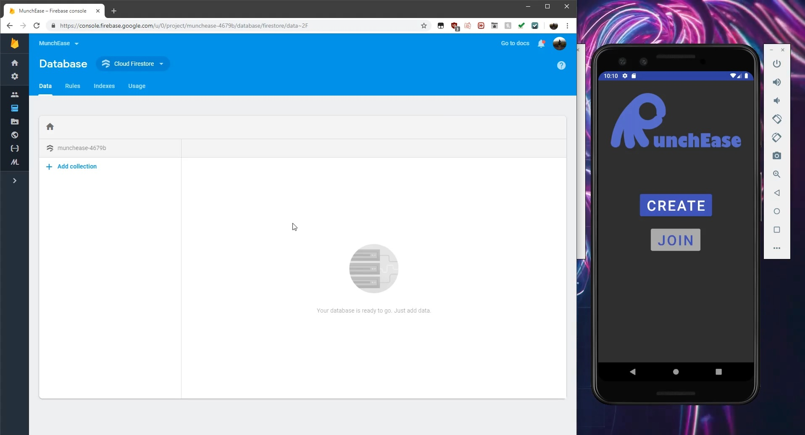
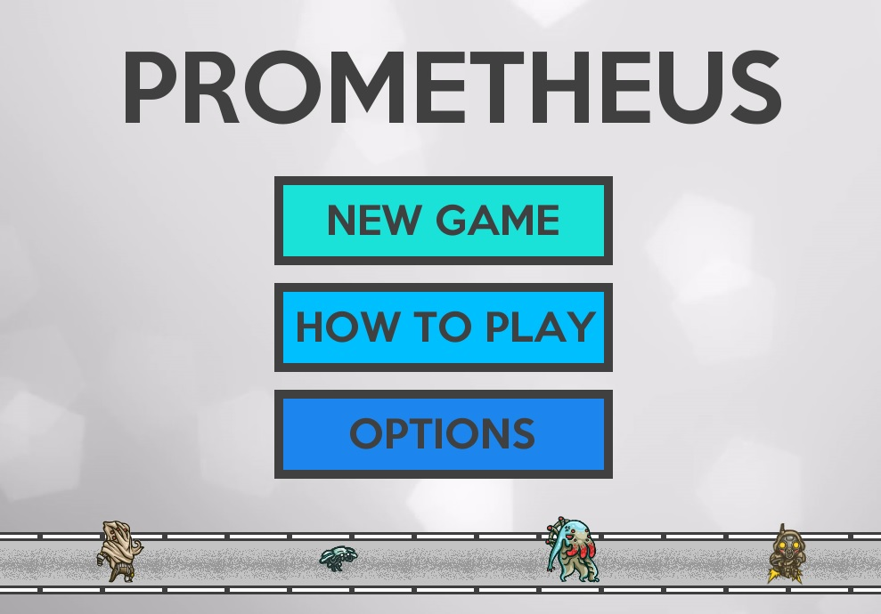

I'm a full-stack software engineer from San Diego, CA who loves to program, game, travel, and exercise. I've worked on a wide range of projects from more typical things like web development and Android apps to newer fields like blockchain and augmented/virtual reality.
In 2025, I had the honor of being selected for Lockheed Martin's prestigious Engineering Leadership Development Program (ELDP), a three-year rotational program designed to accelerate growth for high-performing early-career engineers. I'm currently a part of the Terminal High Altitude Area Defense (THAAD) program, working on digital transformation and process improvement for my first rotation.
Prior to joining ELDP, I worked on embedded systems development for simulation for the THAAD system, and before that, I did web development for Epic Systems in Wisconsin.
For additional information about my professional background, please refer to my resume.
I graduated in 2021 with a B.S. in Computer Science from the University of California, Santa Barbara.
I also had the opportunity to study abroad at Lund University in Lund, Sweden, for the winter 2019 semester.

As part of ELDP, my entire class of 27 engineers worked together on a lifecycle project for a directed-energy drone defense system, where I took on the role of software lead for the Forward Command Post (FCP) element.
I was responsible for designing the software architecture and implementing the GUI, which I did using Python and Tkinter/PyQt6, as well as the networking components, which were required to communicate with other elements of the system. My GUI also integrated with a computer vision component to detect and track drones and display targeting data to the operator. I also honed my skills in AI-assisted software development, leveraging tools to enhance productivity and code quality.
The project culminated in a real-world demo of the system's capabilities at Lockheed Martin's Waterton facility, where we showcased the system's ability to detect and track drones in real-time, though we weren't allowed to actually take them down.

As part of my internship at the UC San Diego Division of Biomedical Informatics (DBMI), I created CertificateChain, a decentralized database system built on the Ethereum Blockchain, culminating in a publication in JAMIA Open.
Biomedical informatics requires the usage of public health datasets, which typically require certifications before researchers are granted access. Prior to this, DBMI staff had to request these certificates by email, resulting in a number of problems outlined in the paper. CertificateChain used Solidity smart contracts to store data to the blockchain, where it could be easily accessed by staff or viewed by others via a web app that I created with Java and Spring Boot.
To perform data collection in preparation for the paper, I wrote BASH scripts to automate testing which ran on a few AWS Virtual Machines. I then did the data analysis with R and created graphics for the paper.
During another internship at UCSD, this time in the Simulation Training Center (STC), I worked on UltraTracker, an augmented reality training system for students at the UCSD School of Medicine.
Soon-to-be doctors at the STC perform training exercises intended to give them experience in real-life situations without worrying about real-life consequences. One of the situations they train for is called a central line, and is notoriously difficult to learn.
UltraTracker aimed to ease this difficult learning curve in two different ways. First, it gave students a real-time overlay via augmented reality of their ultrasound data, motion-tracked to the position of the ultrasound probe. It displayed metrics via Qt and C++, such as needle-probe alignment, to help them learn more quickly with real-time empirical feedback. Second, it allowed experienced doctors to replay the trainees practice attempts by re-rendering their actions using OpenGL.
Unfortunately, the technology is still private, so I cannot link the code here.

MunchEase is an Android app that aims to democratize one of society's greatest traditions: going out for food with your friends or family. Gone are the days of shouting matches and "I wanted X!" vs "But I wanted Y!"
MunchEase is implemented in Java and allows users to create or join a group, denoted by a unique group ID and hosted on Firebase. Group members can then add restaurants to the group's ballot, pulling information from the Yelp API to show data in-app for ease and convenience.
So ditch the hangry mess and revolutionize your planning process today with MunchEase! It even has dark mode!

Though I had dabbled in game modding and development before (see below), my first formal step on the path to becoming software engineer was when I signed up for AP Computer Science in 2015. The end result of that class was a simple tower defense game, named Prometheus.
Written entirely in Java, Prometheus is far from a masterpiece -- it was, after all, the first thing I ever truly made with code. It doesn't elicit the same reaction you might have when you read about blockchains or augmented reality. And yet, I can't bring myself to leave it off this page because of a much simpler reason. To me, this game represents the beginning of my love for something that I would go on to pursue most likely for the rest of my life. Something that I hope that you, dear reader, once experienced as well.
If you'd like to play the game, you'll need a JRE installation. When you download the game, your browser might say that the file can harm your computer, but I promise it won't. It's open-source, so you can verify it yourself!
Header animation by Beeple. Icons from svgrepo.com or their respective official websites.